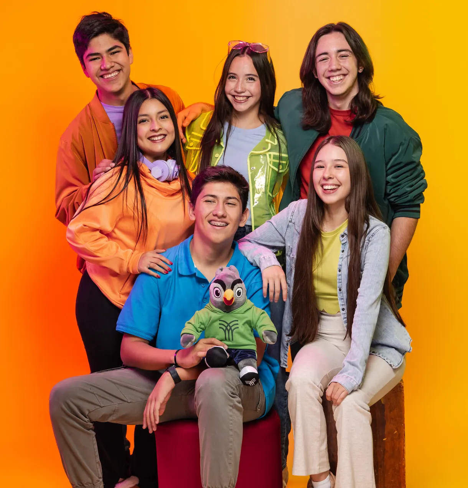
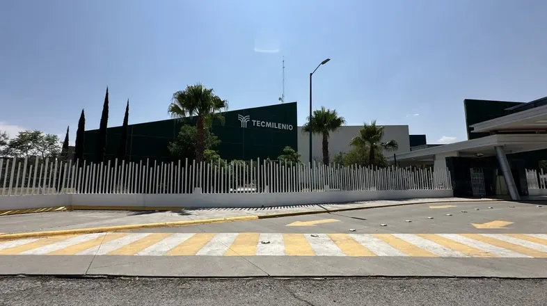
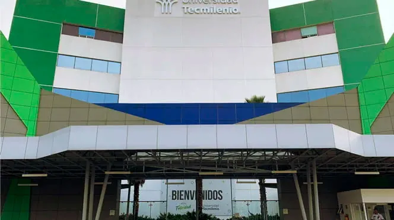
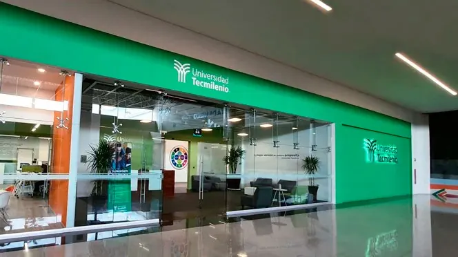
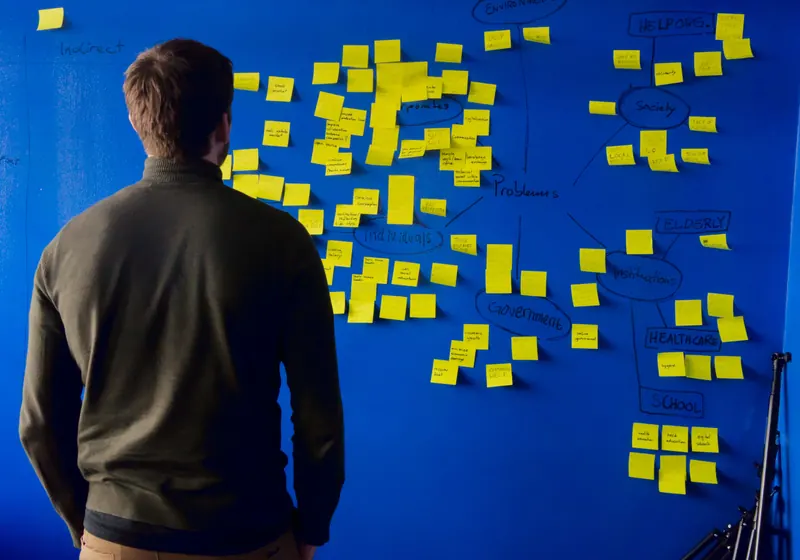
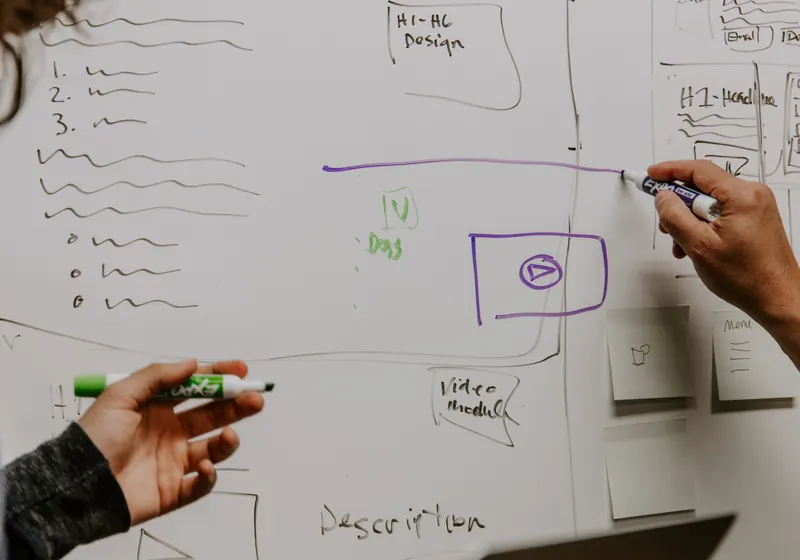
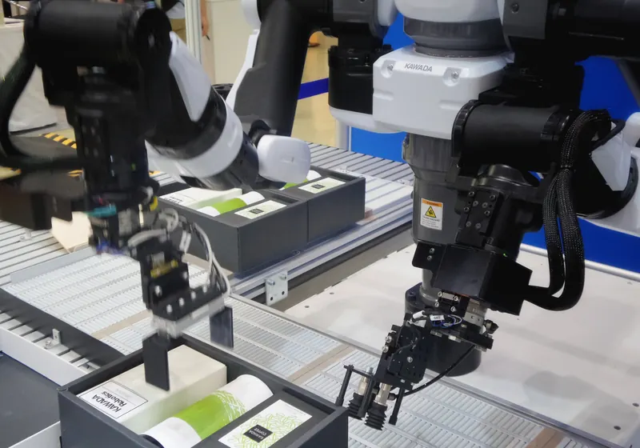
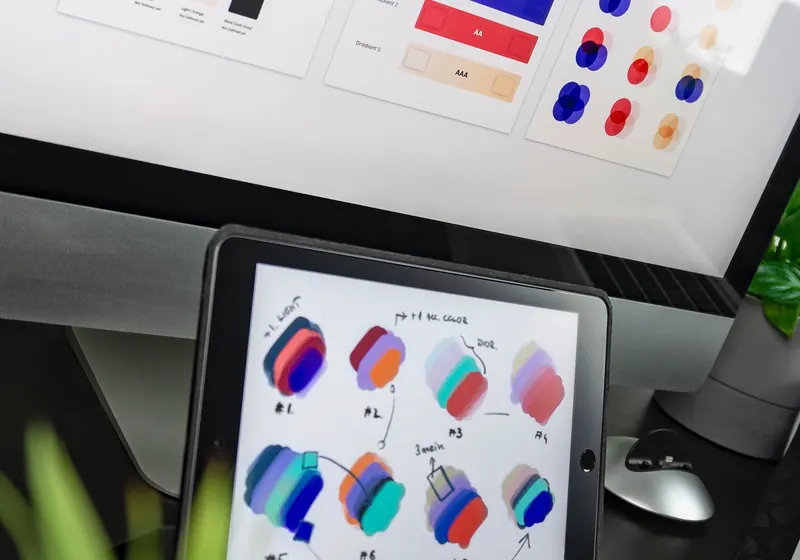
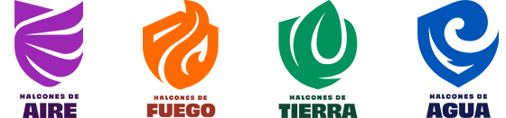
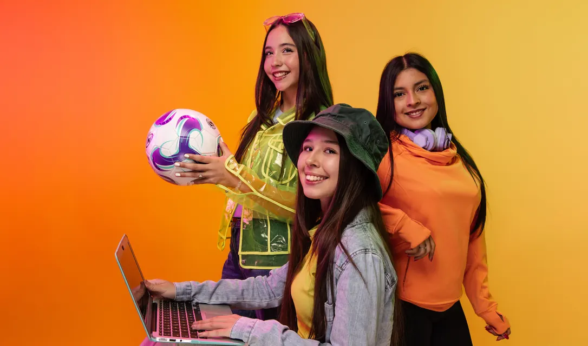

Prepa Intercultural
En Prepa Tecmilenio Intercultural nuestros(as) estudiantes desarrollan la competencia en el idioma inglés, que le dará el acceso a mayores oportunidades en su futuro profesional.

Única prepa intercultural que te ofrece 3 certificaciones y un plan de estudios que te acercan más al mundo laboral.
Ofrecemos dos programas de preparatoria que ayudan a nuestros(as) estudiantes a obtener las habilidades y la experiencia necesaria para impactar positivamente en su futuro profesional.
Nuestros programas de preparatoria se enfocan en desarrollar habilidades que acercan a las y los estudiantes al mundo laboral. Al mismo tiempo, viven nuevas experiencias interactuando con otras culturas, que potenciarán su desarrollo y fortalecerán su autonomía. Esto les permitirá tomar la mejor decisión en su vocación, su carrera profesional y a encontrar su propósito de vida.
En Prepa Tecmilenio Intercultural nuestros(as) estudiantes desarrollan la competencia en el idioma inglés, que le dará el acceso a mayores oportunidades en su futuro profesional.
En Prepa Tecmilenio Intercultural Bilingüe nuestros(as) estudiantes cursan más de la mitad de la preparatoria en inglés, además de aprender a la par un tercer idioma.
Prepa General Tetramestral se enfoca en desarrollar las competencias en el idioma inglés y ayudar a definir el Propósito de Vida. Además, les brindamos herramientas para incrementar sus niveles de bienestar y felicidad.
Disponible solo en Monterrey
Prepa Bilingue Tetramestral va dirigido a estudiantes que tienen aprecio e interés en otras culturas y desean continuar desarrollando sus competencias en el idioma inglés y, adquirir habilidades de comunicación oral y escrita en un tercer idioma.
Disponible solo en Monterrey
*Aplica para Prepa Intercultural Bilingüe.
Más información
Con esta certificación aprenderás uno de los lenguajes de programación más importantes en la actualidad, para desarrollar una amplia gama de aplicaciones tecnológicas, incluso con desarrollos de inteligencia artificial que te abrirán las puertas a mayores oportunidades laborales.
En esta certificación el estudiante desarrolla una de las 10 habilidades que el Foro Económico Mundial menciona en el reporte de futuros del trabajo para el año 2025 y que se refiere a la creatividad, la originalidad e iniciativa. Por medio de un proyecto profesional, cada estudiante llevará una idea a la innovación aplicada.
Brinda las bases para una buena gestión de los recursos económicos de tal forma que se tomen decisiones con los conocimientos necesarios. Durante tercer año en diversas asignaturas y en co-creación con una institución bancaria internacional los estudiantes obtendrán el certificado de bases en herramientas financieras.

Dr. J. Jiménez Cantú s/n, Bosques de la Hacienda, 54715 Cuautitlán Izcalli, Méx

Av. de las Granjas 800, Santa Barbara, Azcapotzalco, 02230 Ciudad de México, CDMX

Lote1 Norte Paseo de Las Americas Manzana 138, Av Insurgentes, Las Américas, 55076 Ecatepec de Morelos, Méx
Descubrir y desarrollar tu Propósito de Vida.
Tomar la mejor decisión al momento de elegir tu carrera, con ayuda de nuestro plan vocacional.
Acrecentar tu capacidad para interactuar con personas de diferentes entornos culturales, lograr entendimiento cultural y una sana convivencia.
Relacionarte positivamente con quienes te rodean.
Desarrollar habilidades tecnológicas que te permitan impulsarte en el mundo digital.
Desarrollar tu creatividad al tener la capacidad de pensar en nuevas soluciones y formas diferentes de hacer las cosas.
Nuestros(as) estudiantes de preparatoria experimentarán una área de interés con nuestras Rutas de Exploración.

Nuestros(as) estudiantes dominarán una de las metodologías para mejorar procesos, Lean Sigma, mediante herramientas estadísticas y análisis de datos que ayudan a realizar cualquier actividad laboral de manera más eficiente.

Las y los estudiantes aprenderán las bases de la mercadotecnia digital, con la finalidad de trazar estrategias mediante el uso y gestión de social media, marketing de contenidos, medios digitales y experiencia de usuario (UX). Además, analizarán los datos recogidos por los servidores para tomar mejores decisiones, orientadas a incrementar el tráfico de usuarios.

Porque la robotización tiene un gran presente y futuro, aquí las y los estudiantes aprenden los conceptos básicos sobre programación, electricidad y diseño mecánico; para que descubran si les apasiona la idea de buscar soluciones tecnológicas para automatizar procesos, que nos hacen la vida más fácil a todos.
En esta ruta conocerán las bases de la industria del turismo de manera profesional en los siguientes rubros: alimentos, viajes, logística y servicios basados en aplicaciones tecnológicas.

Elaborarán representaciones gráficas, a través de herramientas digitales, que puedan proyectar y expresar ideas de forma creativa e informada sobre diferentes temas sociales, culturales, estéticos, tecnológicos, entre otros.
En esta ruta diseñarán, planearán y desarrollarán su negocio, utilizando una metodología de innovación. Además, conocerán cómo administrarlo correctamente para que destaque de entre los demás emprendimientos.
Sabemos lo difícil que puede ser esta etapa de la vida. Por eso, en Prepa Tecmilenio tenemos un modelo de acompañamiento apreciativo.
La mentora o el mentor ofrecen orientación, apoyo, ayuda y asesoramiento en el proceso de autodescubrimiento y educación.
Este modelo es una práctica que les ayudará a optimizar sus experiencias en la preparatoria y alcanzar sus sueños y metas.
Estudiar la preparatoria no será lo mismo sin las actividades extracurriculares que tenemos para ti.
Participa cada tarde en diferentes talleres y experiencias deportivas como fútbol, baile, canto, entre otros, que te impulsarán a descubrir tus talentos, socializar y crear una base de disciplina que te ayudará a lograr lo que te propongas en la vida.


Queremos que no pierdas la oportunidad de participar en talleres deportivos y culturales que te permitan descubrir tu pasión y ser feliz durante tu paso como estudiante en Prepa Tecmilenio.
Además, puedes pertenecer a una sociedad y convivir con otros(as) estudiantes que comparten los mismos intereses, desarrollar hábitos y habilidades que contribuyan a su bienestar, mientras construyen relaciones positivas.

Si tienes alguna duda sobre el proceso de admisión, escríbenos. Nos contactaremos contigo para ayudarte a tomar la mejor decisión.
¡Sí, quiero más información!